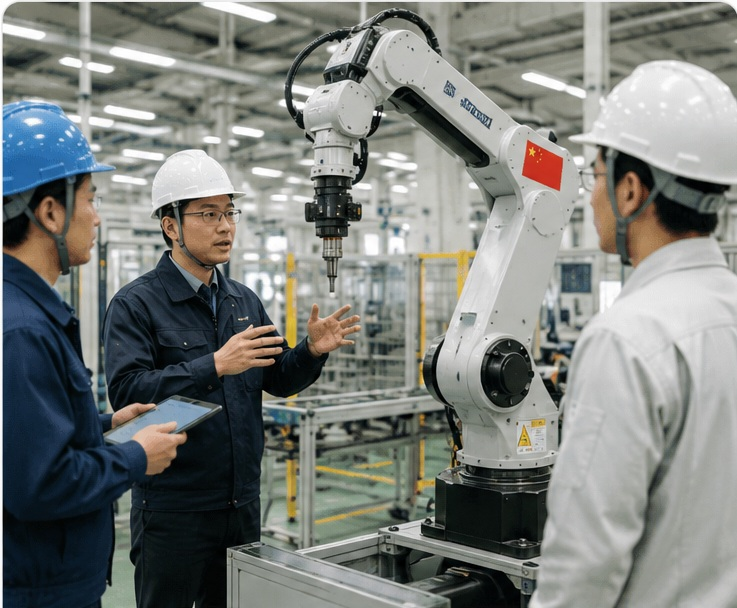

One-stop support for on-site coordination, deployment, and operations — all tailored to the Japanese market
Overcoming language, culture, and technical support barriers to help overseas manufacturers and startups succeed in Japan.
Over 20 years of on-site experience in Japan
Japanese / English / Chinese
Major regions across Japan
Covering field technology and IT
Technical coordination with Japanese customers is difficult
Japanese safety standards and quality requirements are unfamiliar
No local technical support structure
Trial deployment doesn't lead to full-scale rollout
| Typical Distributor | Izumo Soan | |
|---|---|---|
| Approach | Product introduction | Technical understanding |
| Focus | Sales-oriented | Field-oriented |
| After Contract | Engagement ends | Support through operations |
| Customer Relationship | Referral-based | Deployment success-driven |
| Priority | Sales volume | Long-term operations |
In Japan, success comes from "making it stick" — not just "making the sale."
We are not a sales distributor. We are your implementation partner — embedding overseas technology into Japanese worksites.
Handle technical meetings and on-site coordination in Japanese
First-line support for Japanese customer inquiries
Assess requirements and compatibility for Japanese factory deployment
Installation, cabling, trial runs, and validation
Operator training and manual creation
Ongoing incident response, inspections, and operations support

Extensive experience in logistics warehouses, but no experience in Japanese 24/7 production sites and no manpower for around-the-clock support.
Defined site-specific software requirements, developed, deployed, debugged, and validated the robots end-to-end. Built easy-to-use fault handling tools for field staff and conducted hands-on training — addressing hardware failures and special workflow needs.
Established a system enabling rapid recovery even when robots fail. Achieved stable 24/7 production and solved the manufacturer's support gap in Japan.
A Japanese customer needed a simple, practical MES to record production line data and improve efficiency. The MES had to communicate with diverse on-site equipment and the customer's production system — making interface investigation critical.
Gathered and detailed customer requirements. Listed all devices requiring communication, researched documentation, and tested communication software parameters device by device. Installed MES, configured each device interface, and built a real-time data visualization system.
Customer can monitor the production floor at a glance via the MES dashboard, gaining a data foundation for production line improvement.

Logistics warehouse needed to ensure worker safety around fast-moving robots. Fault diagnosis was slow and difficult.
Sourced and integrated Chinese AI cameras with local PLCs. Implemented human-robot detection with control system alerts. Built trajectory tracking from camera footage to accelerate fault diagnosis.
Automated safety monitoring achieved, fault response time significantly reduced.
We adapt flexibly to the scale and circumstances of each project.
Beyond just selling your products — we support you from on-site deployment to operational stability.
Izumo Soan: your trusted local technical partner in the Japanese market.